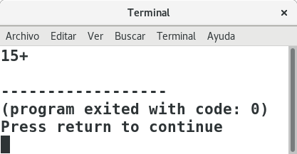
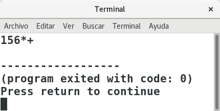
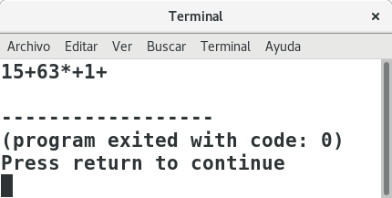
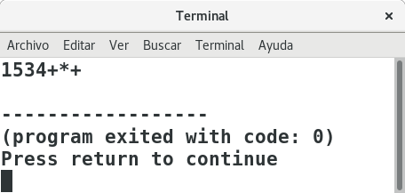

Last Updated: 2022-03-22
Las notaciones infija y postfija son formas de representar a una expresión aritmética, cada una nos indica la posición de los operadores en la expresión aritmética, de tal forma que infija denota la posición de los operadores en medio de los operandos, esta sería la forma habitual en la que nosotros escribimos las expresiones aritméticas, así la suma de A y B la representamos como A + B, por otro lado, la notación postfija nos dice que los operadores se colocan al final de los operandos. Así la expresión infija A + B , se representa en notación postfija como A B +.
En la notación postfija no se requiere el uso de paréntesis tal como se usa en la expresión infija, ya que la expresión A * (B + C) en notación postfija se representa como ABC+*, la precedencia de operadores queda expresada de forma implícita por el orden de aparición de los operadores.
Para poder convertir una expresión infija a postfija se debe tener en cuenta la aparición de paréntesis y la prioridad de los operadores, así podemos convertir manualmente una expresión infija a postfija haciendo lo siguiente:
En este tutorial, aprenderemos a realizar el código en lenguaje de un programa que permite convertir una expresión en notación infija a notación postfija.
Aunque en la sección anterior se ha descrito una forma manual de poder convertir una expresión infija a postfija, el procedimiento planteado sería complicado de pasar a un programa de computadora.
A continuación se presenta un algoritmo basado en algoritmos planteados en bibliografía existente sobre estructuras de datos, que utiliza la estructura de datos Pila para permitir convertir de una expresión infija a postfija, a continuación se observa el algoritmo y en la siguiente sección vamos a traducir el algoritmo a un programa en lenguaje C.
Agregar elemento a expresión postfija
SI (PILA no está vacía)
HACER
operador = pop(pila)
SI ( operador tiene mayor o igual Prioridad que elemento)
SINO
FIN DEL SI
FIN DEL MIENTRAS (PILA no está vacía y seDebeContinuar)
FIN DEL SI
Insertar elemento a la pila (push (pila,elemento))
Insertar elemento a la pila (push (pila,elemento))
operador = pop(pila)
MIENTRAS ( PILA no está vacía y operador no es paréntesis izquierdo)) HACER
Agregar operador a expresión postfija
operador = pop(pila)
FIN DEL MIENTRAS
No es parte de este tutorial la explicación de la estructura de datos PILA, ni la escritura del código correspondiente por lo que es tarea del lector leer y crear su estructura PILA.
Si requieres aprender sobre la Estructura de Datos PILA, puedes ir al siguiente video donde se explica cómo crear una pila estática en Lenguaje C.
A continuación se proporciona el código de la PILA a utilizar en este tutorial.
pila.h
#include <stdlib.h>
#define MAX_ELEMENTOS 10
typedef struct pila{
int indice;
int total;
char datos[MAX_ELEMENTOS];
}Pila;
Pila * crear(){
Pila *p;
p=(Pila *)malloc(sizeof(Pila));
p->indice=0;
p->total=0;
return p;
}
int estaVacia(Pila pila){
if(pila.total==0){
return 1;
}else{
return 0;
}
}
int estaLlena(Pila pila){
if(pila.total==MAX_ELEMENTOS){
return 1;
}else{
return 0;
}
}
int push(Pila *pila, char dato){
if(pila->total<MAX_ELEMENTOS){
pila->datos[pila->indice]=dato;
pila->indice++;
pila->total++;
return 1;
}else{
return 0;
}
}
char pop(Pila *pila){
int aux;
if(pila->total>0){
aux=pila->datos[pila->indice-1];
pila->indice--;
pila->total--;
return aux;
}else{
return -1;
}
}
Para facilitar la reutilización de código, vamos a crear en una librería externa todo el código para realizar la conversión de expresiones de infija a postfija
Crearemos un archivo postfija.h donde crearemos la función infijaToPostfija y las funciones necesarias para la realización del algoritmo.
Esta función nos permitirá conocer el nivel de precedencia que tiene un operador, pudiendo ser 1 si es suma o resta, 2 si es producto o división, y 3 si es una potencia.
Así la función tendría la siguiente estructura:
int nivelDePrecedencia(char operador);
Dónde operador es el operador a obtener su nivel de precedencia.
Función nivelDePrecedencia
int nivelDePrecedencia(char operador){
int nivel=0;
switch(operador){
case '+': nivel =1;
break;
case '-': nivel =1;
break;
case '*': nivel =2;
break;
case '/': nivel =2;
break;
case '$': nivel =3;//NOS SERVIRÁ PARA LA POTENCIA
break;
}
return nivel;
}Esta función verifica si el primer operador enviado como primer argumento tiene mayor o igual prioridad que el segundo operador enviado como segundo argumento.
Usaremos la siguiente tabla para la prioridad de operadores
Operador | Nivel de Prioridad |
Potencia | 3 (Prioridad más alta) |
Multiplicación / división | 2 |
Suma / resta | 1 (Prioridad más baja) |
Así la función tendría la siguiente estructura
int tieneMayorOIgualPrioridad (char operador1, char operador2);
La función nos devuelve 1 (true) si el primer argumento (operador) tiene mayor o igual prioridad que el segundo argumento (operador), la función devuelve 0 (false) en caso contrario.
int tieneMayorOIgualPrioridad(char operador1, char operador2){
int precedenciaPrimerOperador=nivelDePrecedencia(operador1);
int precedenciaSegundoOperador=nivelDePrecedencia(operador2);
if(precedenciaPrimerOperador>=precedenciaSegundoOperador){
return 1;
}else{
return 0;
}
}Esta función nos servirá para saber si un elemento tomado de la expresión infija se trata de un operador.
La función recibirá un argumento de tipo char y retornará 1(true) si el argumento es un operador, o 0 (false) en caso contrario.
La estructura de la función es:
int esOperador(char elemento);
int esOperador(char elemento){
if(elemento == '+' ||
elemento == '-' ||
elemento == '*' ||
elemento == '/' ||
elemento == '$'
){
return 1;
}else{
return 0;
}
}Esta función nos servirá para saber si un elemento tomado de la expresión infija se trata de un operando.
La función recibirá un argumento de tipo char y retorna un 1 (true) si el argumento es un operando, o 0 (false) en caso contrario.
La firma de la función es:
int esOperando(char elemento);
int esOperando(char elemento){
if(elemento >='0' && elemento <='9' ){
return 1;
}else{
return 0;
}
}No olvidemos que ya que vamos a utilizar la pila creada en la librería pila.h, debemos hacer el include correspondiente.
Esta función recibe una cadena de caracteres que es la expresión infija y nos retorna una cadena de caracteres con la expresión en postfija.
Así la estructura de la función sería:
char * infijaToPostfija(char * infija);
Conversión paso a paso del algoritmo al código
Línea | ||
Asignar una cadena vacía a la expresión postfija | char *postfija; postfija=malloc(sizeof(char)*100); | |
MIENTRAS hay elementos en la expresión HACER | int i=0; int longitud= strlen(infija); while (i<longitud){ | |
| elemento= infija[i]; i++; | |
SI (elemento es operando) | if(esOperando(elemento)){ | |
Agregar elemento a expresión postfija | postfija[j]=elemento; j++; | |
SI NO, SI (elemento es operador) | }else if (esOperador(elemento)){ | |
SI (PILA no está vacía) | if(!estaVacia(*pila)){ | |
HACER | int seDebeContinuar; do{ | |
operador = pop(pila) | operador=pop(pila); | |
SI ( operador tiene mayor o igual Prioridad que elemento) | if(tieneMayorOIgualPrioridad(operador, elemento)){ | |
Agregar elemento a expresión postfija | postfija[j]=operador; j++; | |
Bandera seDebeContinuar=true | seDebeContinuar=1; | |
SINO | }else{ | |
Bandera seDebeContinuar=false | seDebeContinuar=0; | |
Insertar operador a la pila | push(pila,operador); | |
FIN DEL SI | } | |
FIN DEL MIENTRAS (PILA no está vacía y seDebeContinuar) | }while(!estaVacia(*pila) && seDebeContinuar); | |
FIN DEL SI | } | |
Insertar elemento a la pila | push(pila,elemento); | |
SI NO, SI (elemento es paréntesis izquierdo) | }else if (elemento == '('){ | |
Insertar elemento a la pila | push(pila,elemento); | |
SI NO,SI (elemento es paréntesis derecho) | }else if (elemento == ')'){ | |
operador = pop(pila) | operador=pop(pila); | |
MIENTRAS ( PILA no está vacía y operador no es paréntesis izquierdo)) HACER | while(!estaVacia(*pila) && operador!='(') { | |
Agregar operador a expresión postfija | postfija[j]=operador; j++; | |
operador = pop(pila) | operador=pop(pila); | |
FIN DEL MIENTRAS | } | |
FIN DEL SI | } | |
FIN DEL MIENTRAS | } | |
//Sacar todos los elementos de la pila y meterlos a la expresión postfija | //Sacar todos los elementos de la pila y meterlos a la expresión postfija | |
MIENTRAS (PILA no está vacía ) HACER | while(!estaVacia(*pila)) { | |
operador = pop(pila) | operador=pop(pila); | |
Agregar operador a expresión postfija | postfija[j]=operador; j++; | |
FIN DEL MIENTRAS | } |
char * infijaToPostfija(char * infija)
char* infijaToPostfija(char * infija){
char elemento,operador;
char *postfija;
postfija=malloc(sizeof(char)*100);
int j=0;
int i=0;
Pila *pila=crear();
int longitud= strlen(infija);
while (i<longitud){
elemento= infija[i];
i++;
if(esOperando(elemento)){
postfija[j]=elemento;
j++;
}else if (esOperador(elemento)){
if(!estaVacia(*pila)){
int seDebeContinuar;
do{
operador=pop(pila);
if(tieneMayorOIgualPrioridad(operador, elemento)){
postfija[j]=operador;
j++;
seDebeContinuar=1;
}else{
seDebeContinuar=0;
push(pila,operador);
}
}while(!estaVacia(*pila) && seDebeContinuar);
}
push(pila,elemento);
}else if (elemento == '('){
push(pila,elemento);
}else if (elemento == ')'){
operador=pop(pila);
while(!estaVacia(*pila) && operador!='(') {
postfija[j]=operador;
j++;
operador=pop(pila);
}
}
}
while(!estaVacia(*pila)) {
operador=pop(pila);
postfija[j]=operador;
j++;
}
postfija[j]='\0';
return postfija;
}
Ahora que tenemos nuestras librerías con las funciones necesarias, podemos probar nuestra función para convertir una expresión infija a postfija,recordemos que la función infijaToPostfija espera como argumento una expresión infija bien formada, así que será trabajo de otra función verificar que la expresión no tiene errores de sintaxis.
Para probar nuestra función, será necesario crear un cliente que mande a llamar a la función.
Para verificar que los resultados son correctos, probaremos con los ejemplos que se plantearon al principio de este tutorial. Para que podamos probar las expresiones, sustituiremos los valores de las literales por un dígito.
cliente.c
#include <stdio.h>
#include "postfija.h"
int main(){
char cadena[]="1 + 5 ";
char *postfija;
postfija=infijaToPostfija(cadena);
printf("%s",postfija);
return 0;
}El resultado obtenido es correcto.

cliente.c
#include <stdio.h>
#include "postfija.h"
int main(){
char cadena[]="1+5*6";
char *postfija;
postfija=infijaToPostfija(cadena);
printf("%s",postfija);
return 0;
}El resultado obtenido es correcto.

cliente.c
#include <stdio.h>
#include "postfija.h"
int main(){
char cadena[]="1+5+6*3+1";
char *postfija;
postfija=infijaToPostfija(cadena);
printf("%s",postfija);
return 0;
}El resultado obtenido es correcto.

cliente.c
#include <stdio.h>
#include "postfija.h"
int main(){
char cadena[]="1+5*(3+4)";
char *postfija;
postfija=infijaToPostfija(cadena);
printf("%s",postfija);
return 0;
}El resultado obtenido es correcto.

Es tarea del lector probar el código con más expresiones aritméticas, también es tarea del lector ejecutar paso a paso el algoritmo para analizar el estado de la PILA en cada paso del algoritmo para su correcto y total entendimiento.
La siguiente actividad será crear el código que permita evaluar expresiones aritméticas postfijas.
Puedes encontrar videos sobre programación en mi canal de youtube:https://www.youtube.com/elprofeariel